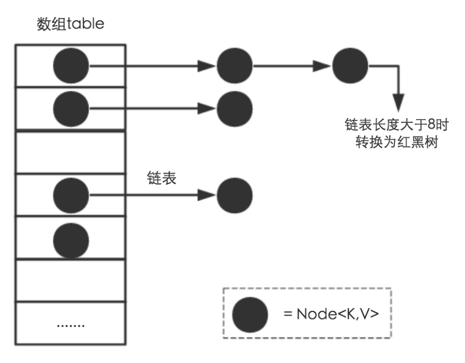
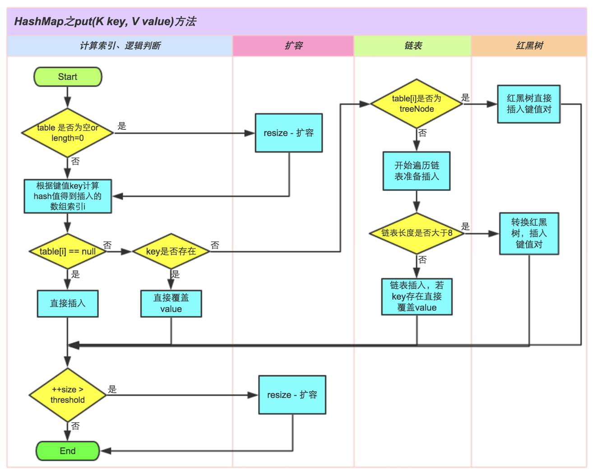
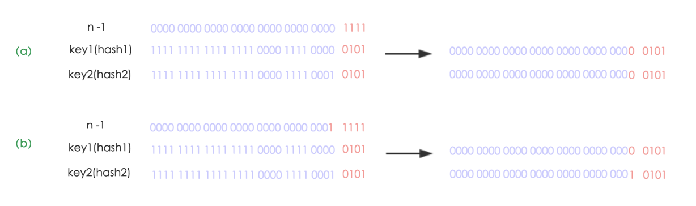
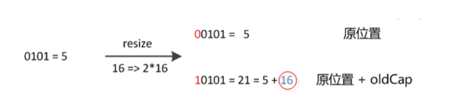
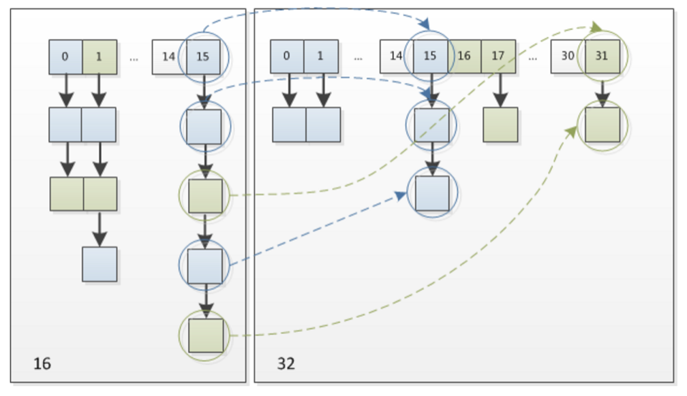

HashMap底层原理总结，几个Hash集合之间的对比。
参考：什么是HashMap？
HashMap底层存储结构
HashMap是一个用于存储Key-Value键值对的集合，每一个键值对也叫做一个Entry。这些Entry分散存储在一个数组当中，这个数组就是HashMap的主干。
1 | /** |
1 | /** |
因为table数组的长度是有限的，再好的hash函数也会出现index冲突的情况，所以我们用链表来解决这个问题，table数组的每一个元素不只是一个Entry对象，也是一个链表的头节点，每一个Entry对象通过Next指针指向下一个Entry节点。当新来的Entry映射到冲突数组位置时，只需要插入对应的链表即可。
需要注意的是：新来的Entry节点插入链表时，会插在链表的头部，因为HashMap的发明者认为，后插入的Entry被查找的可能性更大。
HashMap中的table数组如下所示：

所以，HashMap是数组+链表+红黑树（在Java 8中为了优化Entry的查找性能，新加了红黑树部分）实现的。
Put方法原理
调用hashMap.put("str", 1)，将会在HashMap的table数组中插入一个Key为“str”的元素，这时候需要我们用一个hash()函数来确定Entry的插入位置，而每种数据类型有自己的hashCode()函数，比如String类型的hashCode()函数如下所示：
1 | public static int hashCode(byte[] value) { |
所以，put()函数的执行路径是这样的：
- 首先
put("str", 1)会调用HashMap的hash("str")方法。 - 在
hash()内部，会调用String(Latin1)内部的hashcode()获取字符串"str"的hashcode。 - "str"的hashcode被返回给
put()，put()通过一定计算得到最终的插入位置index。 - 最后将这个Entry插入到table的index位置。
这里就出现了两个问题，问题1: 在put()里怎样得到插入位置index？问题2: 为什么会调用HashMap的hash()函数，直接调用String的hashcode()不好吗？
问题1: 在put()里怎样得到插入位置index？
对于不同的hash码我们希望它被插入到不同的位置，所以我们首先会想到对数组长度的取模运算，但是由于取模运算的效率很低，所以HashMap的发明者用位运算替代了取模运算。
在put()里是通过如下的语句得到插入位置的：
1 | index = hash(key) & (Length - 1) |
其中Length是table数组的长度。为了实现和取模运算相同的功能，这里要求(Length - 1)这部分的二进制表示全为1，我们用HashMap的默认初始长度16举例说明：
1 | 假设"str"的hash吗为: 1001 0110 1011 1110 1101 0010 1001 0101 |
如果(Length - 1)这部分不全为1，假如Length是10，那么Length - 1 = 9 ：1001 那么无论再和任何hash码做与操作，中间两位数都会是0，这样就会出现大量不同的hash码被映射到相同位置的情况。
所以，在HashMap中table数组的默认长度是16，并且要求每次自动扩容或者手动扩容时，长度都必须是2的幂。
问题2: 为什么会调用HashMap的hash()函数，直接调用String的hashcode()不好吗？
HashMap中的hash()函数如下所示：
1 | static final int hash(Object key) { |
HashMap中的hash()函数是将得到hashcode做进一步处理，它将hashcode的高16位和低16位进行异或操作，这样做的目的是：在table的长度比较小的情况下，也能保证hashcode的高位参与到地址映射的计算当中，同时不会有太大的开销。
综上所述：从hashcode计算得到table索引的计算过程如下所示：

put()方法的执行过程如下所示：

HashMap的扩容机制
在HashMap中有一下两个属性和扩容相关：
1 | int threshold; |
其中threshold = Length * loadFactor，Length表示table数组的长度（默认值是16），loadFactor为负载因子（默认值是0.75），阀值threshold表示当table数组中存储的元素超过这个阀值的时候，就需要扩容了。以默认长度16，和默认负载因子0.75为例，threshold = 16 * 0.75 = 12，即当table数组中存储的元素个数超过12个的时候，table数组就该扩容了。
当然Java中的数组是无法自动扩容的，方法是使用一个新的数组代替已有的容量小的数组，然后将旧数组中的元素经过重新计算放到新数组中，那么怎样对旧元素进行重新映射呢？
其实很简单，由于我们在扩容时，是使用2的幂扩展，即数组的长度扩大到原来的2倍, 4倍, 8倍…，因此在resize时(Length - 1)这部分相当于在高位新增一个或多个1bit，我们以扩大到原来的两倍为例说明：

(a)中n为16，(b)中n扩大到两倍为32，相当于(n - 1)这部分的高位多了一个1, 然后和原hash码作与操作，这样元素在数组中映射的位置要么不变，要不向后移动16个位置：

因此，我们在扩充HashMap的时候，只需要看看原来的hash值新增的那个bit是1还是0就好了，是0的话索引没变，是1的话索引变成“原索引+oldCap”，可以看看下图为16扩充为32的resize示意图：

这个设计确实非常的巧妙，既省去了重新计算hash值的时间，而且同时，由于新增的1bit是0还是1可以认为是随机的，因此resize的过程，均匀的把之前的冲突的节点分散到新的bucket了。这一块就是JDK1.8新增的优化点。有一点注意区别，JDK1.7中resize的时候，旧链表迁移新链表的时候，如果在新表的数组索引位置相同，则链表元素会倒置，但是从上图可以看出，JDK1.8不会倒置。
HashMap死锁形成原理
HashMap非线程安全，即任一时刻可以有多个线程同时写HashMap，可能会导致数据的不一致。如果需要满足线程安全，可以用 Collections的synchronizedMap方法使HashMap具有线程安全的能力，或者使用线程安全的ConcurrentHashMap。
要理解HashMap死锁形成的原理，我们要对HashMap的resize里的transfer过程有所了解，transfer过程是将旧数组中的元素复制到新数组中，在Java 8之前，复制过程会导致链表倒置，这也是形成死锁的重要原因（Java 8中已经不会倒置），transfer的基本过程如下：
1 | 1. 新建节点e指向当前节点，新建节点next指向e.next |
举个例子：
1 | 现在有链表1->2->3，要将它复制到新数组的newTable[i]位置 |
死锁会在这种情况产生：两个线程同时往HashMap里放Entry，同时HashMap正好需要扩容，如果一个线程已经完成了transfer过程，而另一个线程不知道，并且又要进行transfer的时候，死锁就会形成。
1 | 现在Thread1已将完成了transfer，newTable[i]=3->2->1 |
在形成链表换以后再对HashMap进行Get操作时，就会形成死循环。
在Java 8中对这里进行了优化，链表复制到新数组时并不会倒置，不会因为多个线程put导致死循环，但是还有很多弊端，比如数据丢失等，因此多线程情况下还是建议使用ConcurrentHashMap。
HashMap和Hashtable有什么区别
Java为数据结构中的映射定义了一个接口java.util.Map，此接口主要有四个常用的实现类，分别是HashMap、Hashtable、LinkedHashMap和TreeMap，类继承关系如下图所示：

Hashtable：Hashtable是遗留类，很多映射的常用功能与HashMap类似，不同的是它承自Dictionary类，并且是线程安全的，任一时间只有一个线程能写Hashtable，并发性不如ConcurrentHashMap，因为ConcurrentHashMap引入了分段锁。Hashtable不建议在新代码中使用，不需要线程安全的场合可以用HashMap替换，需要线程安全的场合可以用ConcurrentHashMap替换。
总结
- 扩容是一个特别耗性能的操作，所以当程序员在使用HashMap的时候，估算map的大小，初始化的时候给一个大致的数值，避免map进行频繁的扩容。
- 负载因子是可以修改的，也可以大于1，但是建议不要轻易修改，除非情况非常特殊。
- HashMap是线程不安全的，不要在并发的环境中同时操作HashMap，建议使用ConcurrentHashMap。
- JDK1.8引入红黑树大程度优化了HashMap的性能。